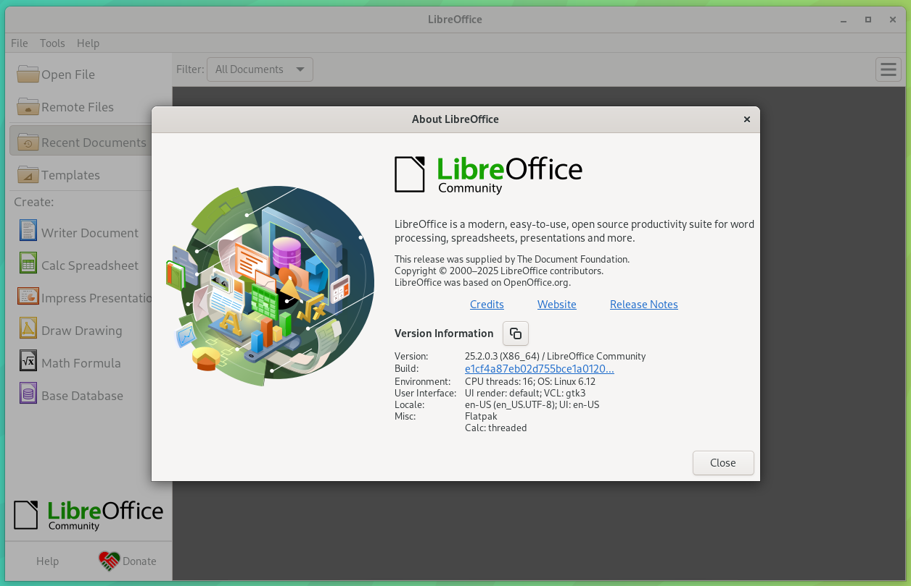

Contexte
Dans le cadre de mes missions au support informatique, j’ai participé à la gestion et au traitement des incidents et demandes utilisateurs à l’aide de l’outil de ticketing OmegAssist. L’objectif était de rétablir rapidement un fonctionnement normal des postes de travail tout en assurant un suivi rigoureux et une traçabilité des actions réalisées.
Démarche (workflow ticket)
- Consultation des tickets ouverts (contexte, utilisateur, matériel, urgence).
- Analyse de la demande / de l’incident (logiciel, configuration, accès distant…).
- Diagnostic : vérifications (paramètres, droits, configuration poste, tests).
- Intervention : correction, installation, mise à jour ou paramétrage.
- Suivi : mise à jour du ticket (actions réalisées, avancement, résultats).
- Validation + clôture : confirmation utilisateur, solution documentée.
Cas traités (Problème → Action → Résultat)
Renouvellement de certificats VPN (télétravail)
Problème : accès VPN impossible ou certificat expiré empêchant la connexion distante.
Action : renouvellement / réinstallation des certificats nécessaires, contrôle de la configuration VPN puis test de connexion.
Résultat : accès distant rétabli et validé avec l’agent.
Mise à jour LibreOffice vers la version 2025
Besoin : disposer des dernières fonctionnalités et correctifs de sécurité.
Action : mise à jour / installation de LibreOffice 2025 sur postes utilisateurs, vérification du lancement et des documents.
Résultat : application mise à jour et opérationnelle sur les postes concernés.
Installation du logiciel CIRCL
Besoin : installer le logiciel sur un poste de travail pour permettre son utilisation.
Action : installation, configuration et vérification du bon fonctionnement (tests de lancement / prérequis).
Résultat : logiciel fonctionnel et prêt à l’usage sur le poste utilisateur.
Installation / mise en place d’une BALF
Besoin : créer/mettre en service une boîte mail partagée pour un usage collectif.
Action : mise en place et configuration de la BALF (accès, paramétrage), puis tests d’envoi/réception.
Résultat : BALF opérationnelle pour les utilisateurs concernés.
Suivi et traçabilité
Tout au long du traitement, je mettais à jour les informations dans OmegAssist (actions réalisées, état d’avancement, solution retenue). Cette traçabilité permet de conserver un historique des interventions et de faciliter la prise en charge d’incidents similaires.
Résultats
Les incidents et demandes ont été traités efficacement, permettant aux utilisateurs de retrouver rapidement un fonctionnement normal. Les opérations de maintenance (mises à jour, configuration VPN, installations) ont contribué à maintenir un environnement de travail stable et opérationnel.
Preuves
(Ajoute ici des captures d’écran / extraits de procédures. Renomme bien tes fichiers dans assets/img.)
Capture OmegAssist
Ex : liste des tickets / ticket détaillé (en masquant les infos sensibles).

Mise à jour / installation
Ex : LibreOffice 2025 / Circl (capture après installation).
